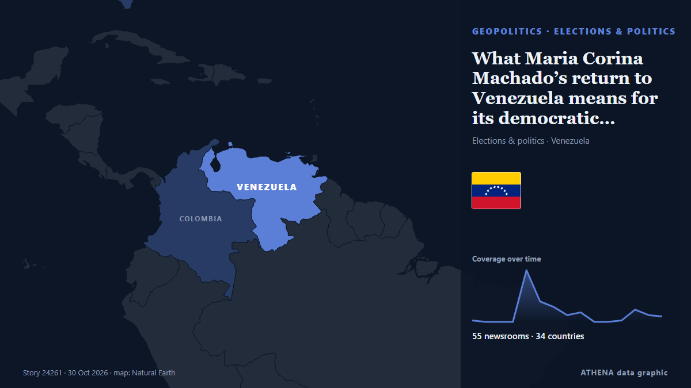

What Maria Corina Machado’s return to Venezuela means for its democratic transition

CARACAS, Oct 23 - The Venezuelan opposition movement headed by Nobel Peace Prize laureate Maria Corina Machado is preparing for eventual elections, including a new effort to boost voter registration… من The Straits Times
نشرته بشكل مستقل 55 مصدرًا في 34 دولة منذ 23 أكتوبر، وأول من نشره The Straits Times؛ والتغطية في ذروتها. يقدّر ATHENA الخطر بأنه معتدل (2.0/10)، ويعود ذلك أساسًا إلى خطورة الضرر الموصوف ونطاقه الجغرافي والقطاعي. الثقة 91٪ (مرتفعة)، وعدد المصادر المستقلة المؤكِّدة: 55، بمتوسط موثوقية للمصادر يبلغ 76٪.
لماذا يهم: قد تغيّر التطورات الأمنية والدبلوماسية التحالفات والتجارة والأسواق إلى ما هو أبعد بكثير من الدول المعنية مباشرة.
ما الذي تغيّر: 13 تقارير جديدة من 10 غرف أخبار خلال 24 ساعة حتى 30 أكتوبر.
العنوان الأول: María Corina Machado Returns to Venezuela
تُعرض العناوين بالإنجليزية كما نُشرت.
نظرة سريعة
اختير وقُيِّم وكُتب وفق منهجية ATHENA المنشورة. لا يتدخل أي محرر في الأحداث بعينها. كيف يُنتَج ›
| 23 Oct 11:01 UTC | 1 |
|---|---|
| 23 Oct 23:01 UTC | 0 |
| 24 Oct 11:01 UTC | 0 |
| 24 Oct 23:01 UTC | 0 |
| 25 Oct 11:01 UTC | 38 |
| 25 Oct 23:01 UTC | 15 |
| 26 Oct 11:01 UTC | 11 |
| 26 Oct 23:01 UTC | 5 |
| 27 Oct 11:01 UTC | 7 |
| 27 Oct 23:01 UTC | 0 |
| 28 Oct 11:01 UTC | 0 |
| 28 Oct 23:01 UTC | 1 |
| 29 Oct 11:01 UTC | 9 |
| 29 Oct 23:01 UTC | 5 |
| 30 Oct 11:01 UTC | 4 |
| 23 Oct 11:07 UTC | 0.0 |
|---|---|
| 25 Oct 16:28 UTC | 1.4 |
| 30 Oct 20:05 UTC | 2.0 |
لماذا هذه الأرقام
الأهمية
الخطر
الثقة
التغطية — من نشر الخبر ومتى
العنوان كما نُشر · يفتح الأصل- The Straits Times · سنغافورة · SingaporeAwaiting Machado's return, Venezuela opposition looks ahead to elections
- The New York Times (World) · الولايات المتحدة · United StatesMaría Corina Machado Returns to Venezuela
- Colombia One · كولومبيا · ColombiaOpposition Leader Maria Corina Machado Returns to Venezuela
- The New York Times (World) · الولايات المتحدة · United StatesMaría Corina Machado Returns to Venezuela
- Times of India · الهند · India'I am here. With you': Maria Corina Machado returns to Venezuela from exile
- NPR · الولايات المتحدة · United StatesVenezuela's opposition leader María Corina Machado returns after months in exile
- BBC News · المملكة المتحدة · United KingdomVenezuelan opposition leader María Machado returns after months in exile
- The Rio Times · البرازيل · BrazilMachado Back in Venezuela, Odds Hit 99%
- CBC News · كندا · CanadaVenezuela's opposition leader Machado returns after months in exile
- The Straits Times · سنغافورة · SingaporeVenezuela opposition leader Maria Corina Machado returns home after months in exile
- Euronews English · فرنسا · FranceMaría Corina Machado back in Venezuela after 10 months in exile
- CBS News (World) · الولايات المتحدة · United StatesVenezuela opposition leader María Corina Machado returns to country
- PBS NewsHour · الولايات المتحدة · United StatesVenezuela's opposition leader Machado returns after months in exile
- The Guardian · المملكة المتحدة · United KingdomExiled opposition leader María Corina Machado returns to rapturous reception in Venezuela
- ABC News (International) · الولايات المتحدة · United StatesVenezuela opposition leader Machado returns after months in exile
- Sky News (World) · المملكة المتحدة · United KingdomExiled opposition leader announces shock return to Venezuela
- Cyprus Mail · قبرص · CyprusVenezuela opposition leader Maria Corina Machado returns to Venezuela
- Anadolu Agency (English) · تركيا · TurkeyOpposition leader Machado returns to Venezuela after months in exile
- MercoPress · أورغواي · UruguayMaría Corina Machado returns to Venezuela after ten months abroad and seven failed attempts
- France 24 English · فرنسا · FranceOpposition leader Machado returns to Venezuela after 10 months in exile
- The Irish News (Belfast) · المملكة المتحدة · United KingdomVenezuela’s opposition leader Machado returns after months in exile
- RTÉ News · أيرلندا · IrelandOpposition leader Machado announces return to Venezuela
- The Hill · الولايات المتحدة · United StatesMachado returns to Venezuela after 10 months of exile
- Fox News (World) · الولايات المتحدة · United StatesVenezuelan opposition leader María Corina Machado makes surprise return home after nearly a year abroad
- Newsroom Panama · بنما · PanamaAfter Months in Exile Venezuela’s Opposition Leader Maria Corina Machado Returns Home.
- NDTV · الهند · IndiaNobel Peace Prize Winner Machado Announces Return To Venezuela
- The Jerusalem Post · إسرائيل · IsraelVenezuela opposition leader Maria Corina Machado returns to Venezuela
- ABC News Australia · أستراليا · AustraliaOpposition leader Maria Corina Machado returns to Venezuela
- Al Jazeera English · قطر · QatarVenezuela’s opposition leader Maria Corina Machado returns from exile
- Latin America Reports · LATExiled Venezuela opposition leader Maria Corina Machado returns to Venezuela
- The National · الإمارات العربية المتحدة · United Arab EmiratesOpposition leader and Nobel Prize winner Maria Corina Machado returns to Venezuela
- Times of India · الهند · IndiaNobel laureate, Venezuela opposition leader Machado returns after 1 year of exile
- The Independent · المملكة المتحدة · United KingdomVenezuelan opposition leader María Corina Machado returns after 10-month exile
- CNA (Channel NewsAsia) · سنغافورة · SingaporeVenezuela opposition leader Machado returns home after fraught year away
- NBC News (World) · الولايات المتحدة · United StatesVenezuela’s opposition leader Machado returns after months in exile
- Stuff · نيوزيلندا · New ZealandVenezuela's exiled leader returns home to challenge Trump-backed regime
- The New York Times (World) · الولايات المتحدة · United StatesWho Is María Corina Machado?
- Gulf News · الإمارات العربية المتحدة · United Arab EmiratesNobel laureate Maria Corina Machado returns to Venezuela after months abroad
- Havana Times · كوبا · CubaExiled Opposition Leader Maria Corina Machado Returns to Venezuela
- Helsinki Times · فنلندا · FinlandVenezuela opposition leader María Corina Machado returns after 10 months in exile